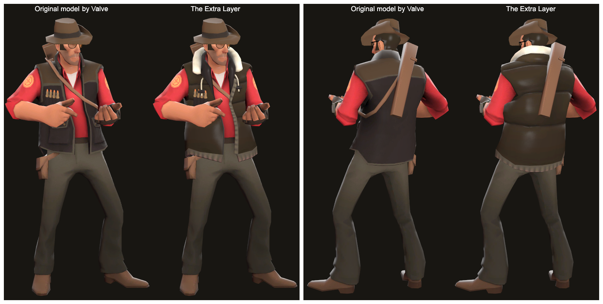

Team Fortess 2 contributions
I have been contributing to Team Fortress 2 for a few years. Below are some of my submissions that were accepted in the game.
Optimization is always a challenge since models are required to be under 1400 triangles (with a version under 700 triangles) which forces us to get creative even with the limitations.
The Automatic Pilot
A plane pilot coat and hat inspired by the movie "Catch Me If You Can".
[TF2 wiki page]
The Extra Layer
Another item that was accepted by Valve.
It's a padded vest for the Sniper meant to match his original color palette.
[TF2 wiki page]

